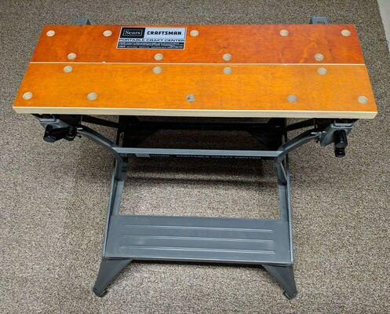
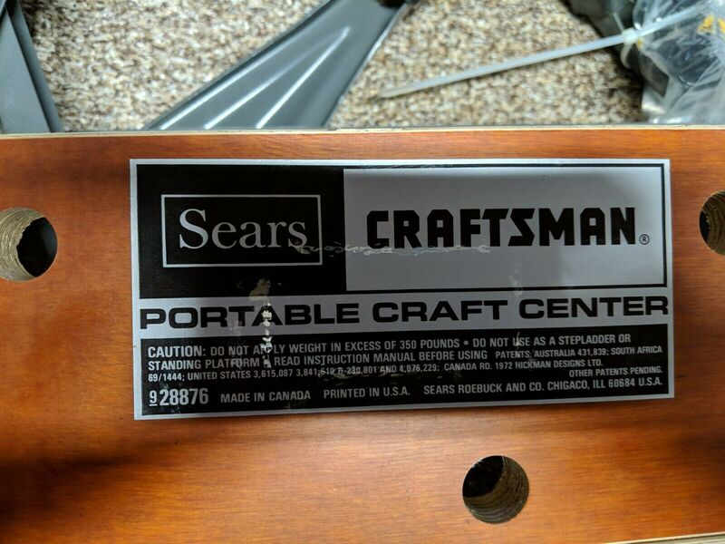
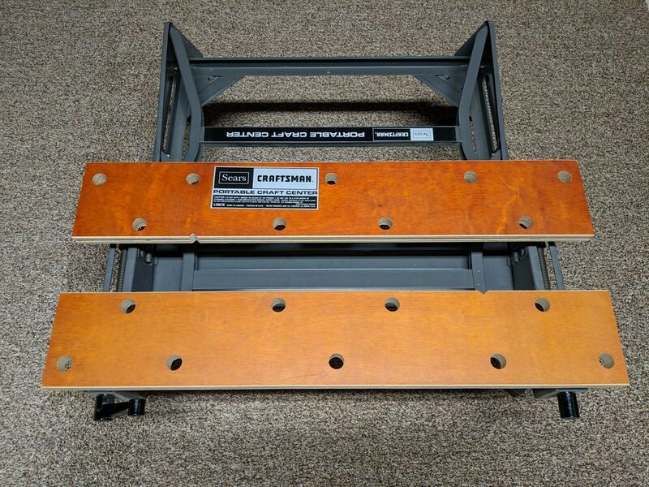
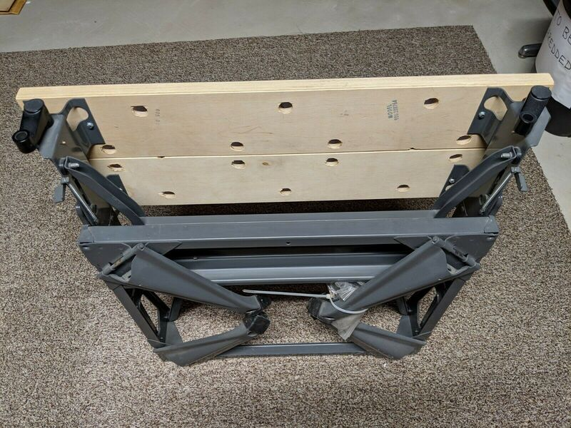
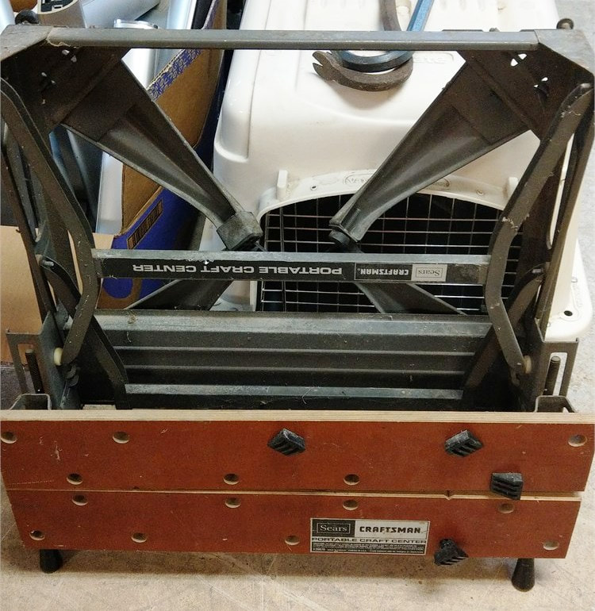
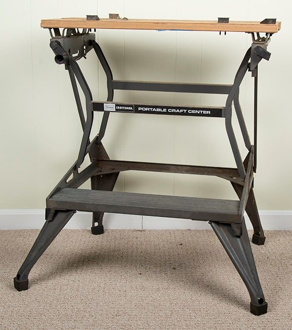
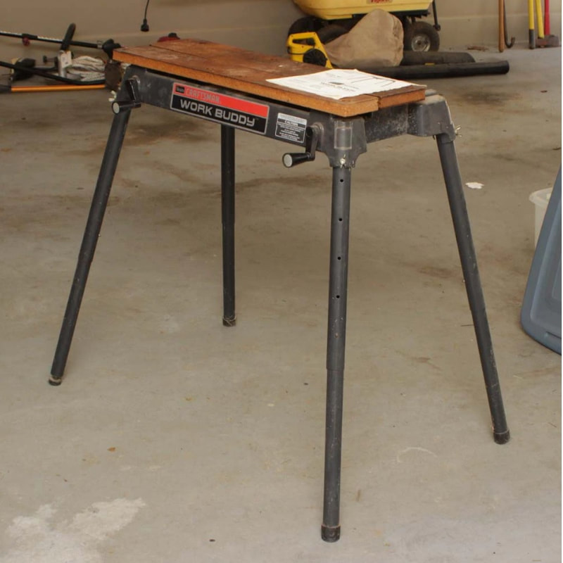

Time for a complicated story, including legal discussion. (See legal references after the photo gallery at the bottom of the page.)
In the early 1970's, Sears, Roebuck and Co. was perhaps the major tool retailer in the United States. When Ron Hickman attempted to get his Workmate produced and sold in the United States, naturally Sears was one of the companies he approached. They turned him down.
A company called Hempe Manufacturing had for decades been supplying miter boxes to Sears for sale under the Craftsman name. In 1975, as the Workmate became a huge success for Black & Decker, Hempe developed their own portable vise/workbench combo that was very similar to the Workmate, but constructed entirely of oak and particle board. In December 1975, the company that was managing license rights under Hickman's U.S. patent sued Hempe for patent infringement.
While the case was in process, Sears started selling the Hempe bench as the Craftsman Porta-Bench. It appeared for a single year in the 1976-77 Sears Craftsman Power and Hand Tools catalog (as "Our exclusive design"), and also in newspaper ads in 1976 and 1977. (See the Porta-Bench in the "Catalogs and Brochures" section of the Documents page where you will find all of the Sears catalog excerpts mentioned here.)
The following year, Sears appeared to change course by reaching an agreement with Black & Decker to license the Workmate under their own name. So was born the Sears Craftsman Portable Craft Center. It made its first appearance in the 1977-78 Sears Craftsman Power and Hand Tools catalog. It was a 79-001 made in Brockville, but with Sears Craftsman labeling.
Meanwhile, the court case over the Porta-Bench continued, ending in April 1978 with a consent judgment prohibiting Hempe from manufacturing the benches. The Porta-Bench was history after barely even making it to market.
Three months later in July 1978, in a "what-were-they-thinking" reversal of tactics, Sears introduced the similar "Work Buddy", another copy of the Workmate, made for them this time by Emerson (see a photo of it at the bottom). This appeared for a single year in the 1978-79 Sears Craftsman Power and Hand Tools catalog (see the Documents page), featured more prominently on the same page as the Black-&-Decker-manufactured Portable Craft Center. The text made a number of comparisons between the two, all touting advantages of the Work Buddy. Guess what—Black & Decker sued Sears in August for patent infringement.
Sears discontinued the sale of the Work Buddy, but the court case (with at least one counter suit) dragged out for years. Meanwhile, Sears continued selling the legitimate, relabeled Workmate. A final judgment in favor of Black & Decker was reached in 1982, so the Work Buddy never reappeared.
The Portable Craft Center was manufactured by Black & Decker at the Brockville factory using the same components as on the Workmate 79-001. I have found photos of the Portable Craft Center with features of the 79-001 Type 4 through 8, which fits the period of production of approximately 1977 through 1982. You can see one below stamped with a Brockville production code, but I haven't found any markings similar to the Workmate's Type codes. The label on the jaws is similar to that from the 79-001 Type 4. An interesting quirk of its labeling is that unlike the steel-H-frame Workmate, both H-frames have crossbar labels, so you can easily see the "Portable Craft Center" name from front or rear.
(If you look at the Sears catalog excerpts on the Documents page, you'll notice an oddity—Sears never used the full name of the Portable Craft Center in their catalogs. As you can see in the photos below, the Portable Craft Center is clearly marked with that name on labels on the jaws and both crossbars. You can also see that name on the front of the instruction manual. Yet in the 1977-78 catalog, the text referred to it as the Portable Work Center and in 1978-79 called it the Portable Workbench. In both of those catalogs, it appears that they intentionally omitted or blacked out the labels on the workbench for the catalog photos. By the 1981 catalog, the Portable Craft Center label was just barely visible (but not really readable) but with the text now calling it the Portable Workbench/Vise. In the 1982/83 catalog the text changed again, making it the Portable Folding Workbench/Vise. )
Sears Craftsman Portable Craft Center

Click on any image below to open the gallery of full-screen images.















[1] Emerson Elec. Co. v. Black Decker Mfg. Co., United States Court of Customs and Patent Appeals, No. 79-1016. Decided September 18, 1979.
[2] Judge Weighs Fine for Sears, The New York Times, February 24, 1981
[3] The Black and Decker Manufacturing Company and Tekron licensing v. Sears, Roebuck and Company U.S. Court of Appeals for the Fourth Circuit. Decided June 9, 1982
[2] Judge Weighs Fine for Sears, The New York Times, February 24, 1981
[3] The Black and Decker Manufacturing Company and Tekron licensing v. Sears, Roebuck and Company U.S. Court of Appeals for the Fourth Circuit. Decided June 9, 1982